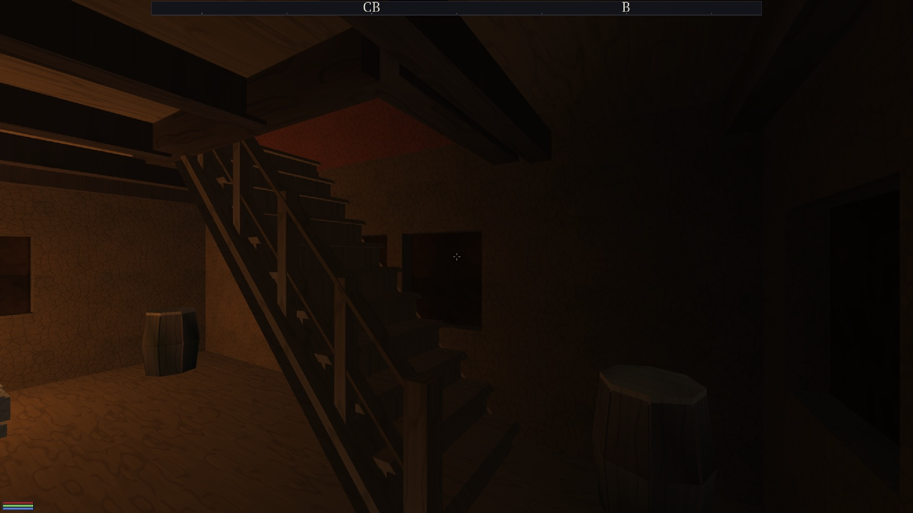
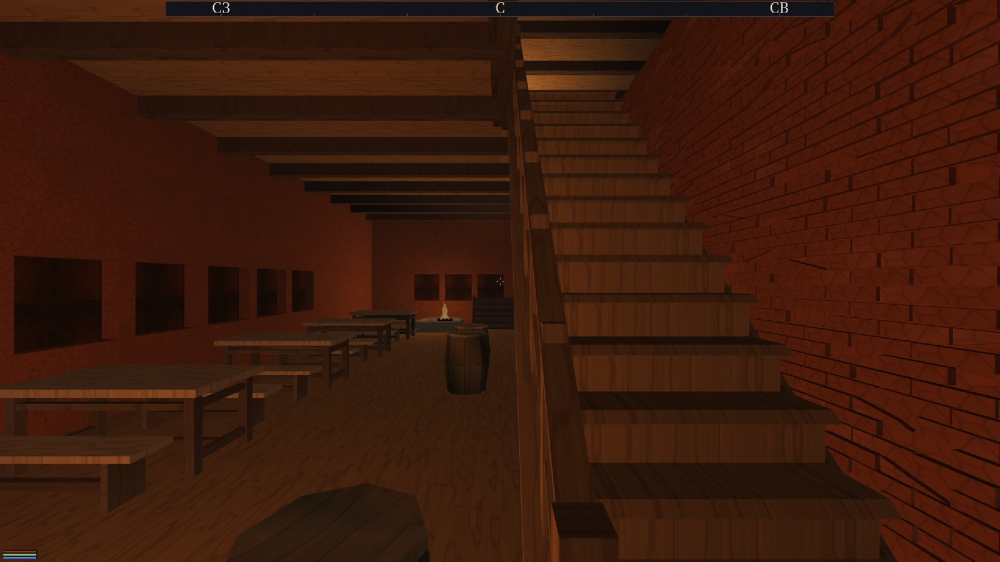
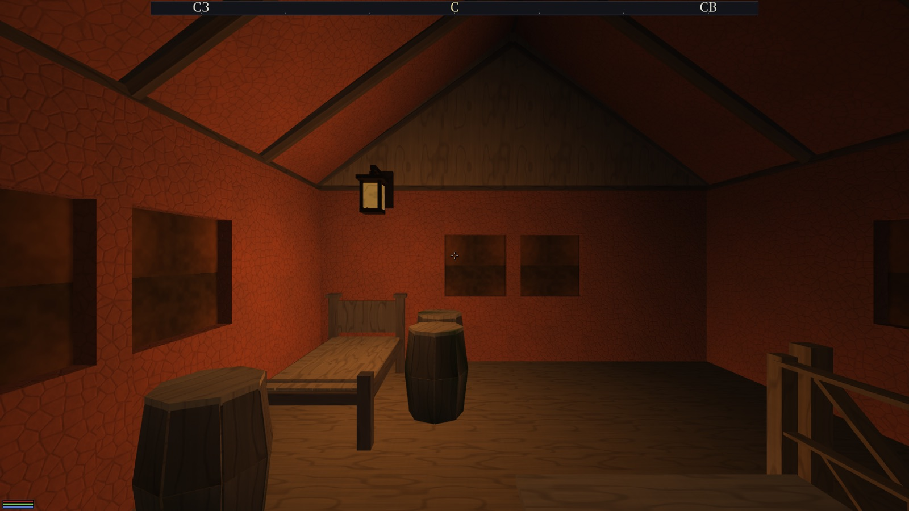

Лестница, а не трап; и второй этаж, в который есть зачем подниматься
Волна по пунктам 2–4 топ-5 аудита эпохи «Большой мир» (28.08).
Собрано build_look (Ninja, RelWithDebInfo, clang из Homebrew);
build_lead не трогался.
--check СВЕЖИЙ1. Марш перестал быть пожарным трапом
«Проступи — тонкие доски с просветами, подступёнков нет, перил нет, площадки нет. Это пожарный трап, а не лестница жилого дома.» — аудит 28.08
Что появилось у марша
| Что | Где живёт | Как сделано |
|---|---|---|
| ПОДСТУПЁНКИ — закрытые ступени | HouseStairs.cpp, свойство riser=1 |
Щит между проступями: низ на верхе предыдущей доски, верх в изнанку своей, отступ 0.03 назад от носка — свес остаётся читаемым. У open=2 (уличный камень) запрещён: зазоры между блоками — эталонная форма. В коллайдер щит не идёт, и это не лень: вертикаль поперёк хода — ровно та ловушка капсулы, ради обхода которой лежит невидимый пандус (чар-трасса 21.08). Физика бит-в-бит прежняя. |
| ПЕРИЛА со стороны падения | house_flight_ax в forge_houses.cpp |
Тетива + балясины шагом 0.8 м (было «ровно три штуки при любой длине») + поручень 0.95 + промежуточная слега 0.48 + тумбы на концах. Высоты 0.95/0.48 — те же два числа, что у балюстрады галереи, поэтому ярус и марш читаются одной рукой. |
| ПЛОЩАДКА, где марш ломается | house_landing, замок Вайтрана |
Подъём 6.31 м — это 23 ступени ПОДРЯД при жилом потолке 16–18. Разделено пополам: два марша по 3.15 (11 и 12 ступеней) и площадка 1.4 м — диаметр капсулы плюс радиус с каждой стороны. |
Одна рука на оба города (правило 39)
До этой волны марш внутри дома был голым контуром fill=6: у Вайтрана
выписанным руками пять раз и без единой балясины, у Житнова — через свою руку с
перилами. Аудит снял с обоих один и тот же кадр. Теперь тело руки одно
(house_flight_ax), житновская cornhall_flight_ax переводит в неё только
соглашение о стороне.
Марши числами
| Замер по всей полке (194 чертежа) | было | стало |
|---|---|---|
| маршей всего | 77 | 78 (замок разделён площадкой) |
с rise=0.28 / nosing=1 | 35 | 37 |
с подступёнками riser=1 | 0 | 37 |
| с перилами (тетива + балясины + 2 слеги + тумбы) | 0 | 37 |
| угол перепечённых | 45.00° | 45.00° |
| проступь перепечённых | 0.268…0.308 | 0.268…0.308 |
| маршей длиннее 16 ступеней без площадки | 2 | 0 |
Двор постоялого двора: находка, записанная 24.08 как нечинимая
Марш со двора на галерею: подъём 4.90 на ход 4.50 — 47.4°, 28 ступеней, проступь 0.161 при норме 0.28. Это тот самый кадр аудита «тетива режет комнату пополам». Запись 24.08 считала, что для починки нужен ход 8.12 м и это двигает пятно тела с −5.9 на −9.5.
Ошибка была в счёте, а не в геометрии: «28 ступеней» — не свойство марша, а следствие того, что подступёнок тогда был один на всех (0.175). При заказанном 0.28 ступеней 18, и ход под 45° равен подъёму — 4.97, а не 8.12. Двор вырос на 0.47 м, а не на 3.6. Стало: 45.00°, 18 ступеней, проступь 0.276.
Остальные 41 «неперепечённых» — разбор поимённо
Аудит насчитал 42 непеперепечённых марша и назвал их «те самые пологие 26.6°». Замер говорит другое, и это надо сказать вслух:
| Класс | шт. | Решение |
|---|---|---|
Уличный камень: city-stoop*, city-steps*, city-stairs*, перроны обоих замков (open=2 mat=3) | 27 | НЕ трогать: их посадку правит таблица поправок gen_city.py, а норма «круче 45°» к парадному перрону не относится. |
| Наружные крыльца и трапы (мельница, усадьба ×2, амбар, хвостовая лестница ветряка) | 5 | Уклон оставлен (крыльцо — не марш), но добавлен nosing=1: при nosing=0 пандус приходил на 0.155 выше и земли, и порога — это буквально «перепрыгивать у самой двери», и таблица поправок города о СВОИХ крыльцах рецепта не знает. |
Каменные короба у порога (open=0, подъём 0.39) | 5 | Не дефект: подступёнок у них есть телом ступени, пандуса нет вовсе. |
Демо-стенды frame-replica, stone-replica | 2 | Не чинятся сознательно (решение аудита). |
u-house — демо-дом, ни в одном городе не стоит | 2 | Вне боевого набора. |
Вывод одной строкой: внутридомовых среди «неперепечённых» не осталось ни одного; цифра 42 была верной, а её толкование «пологие внутридомовые» — нет.

zh-house-s-old-march.jpg. Видны закрытые ступени (щиты подступёнков), тетива,
балясины, поручень и тумба у подножия. До правки здесь была стопка досок с просветами.
2. Второй этаж перестал быть чёрной пустотой
«Там ЕСТЬ мебель — и там ни одного источника света: в локации ровно один [light], на отметке 1.50, ПОД настилом. Поднявшись по маршу, игрок выходит в чёрную пустоту.» — аудит 28.08
| Свет локаций | было | стало |
|---|---|---|
| локаций с 2 и более огнями | 0 | 70 из 106 |
| огней в локации: 1 / 2 / 3 / 4 | 105 / 0 / 0 / 0 | 35 / 55 / 12 / 3 |
| потолок бюджета (проверяется вслух генератором) | — | 8 |
Ставится ПАРА, а не одно: тело furn-lamp-wall (стекло светится само, glow=1 —
видно при любом бюджете точечных светов) плюс строка [light]. Тело без огня — мёртвая палка,
огонь без тела — свет ниоткуда.
Точка — центр тяжести убранного яруса, а не середина пятна: середина пятна у половины тел приходится в ПРОЁМ лестничной клетки, и светец повис бы над дырой, светя на первый этаж.
Высота фитиля 1.70 над настилом — замер кадром, а не вкус. Стекло уличного фонаря сидит на 2.34 от начала тела; на ярусе жилого тела это ровно линия карниза, и первая проба (огонь на 5.85 при настиле 3.51) вернула ЧЁРНУЮ комнату — точка огня оказалась в теле кровельной плиты. Тот же кадр с огнём на 5.21 — ниже.

zh-upper-floor-pitch-black.jpg. Кровать, две бочки, балюстрада лестничной клетки
справа и сам светец на стене. Прежде здесь был чёрный кадр.3. Судья локаций: 169 → 1
| Класс находки | было | стало | Настоящая причина |
|---|---|---|---|
| Р2 «предмет ВЫШЕ пола» (3 постоялых двора Житнова) | 150 | 0 | ОДНО ЧИСЛО. FLOOR["cornhall-inn"] в паспорте Житнова: 0.56 → 0.62.
Поправка заведена законно (манифест меряет САМУЮ ШИРОКУЮ плиту, а у постоялого двора это
перекрытие поверх проезда), но записана была плоскостью плиты вместо её верха:
подменяя предмет замера, поправка сменила и единицу. Вся мебель зала стояла на 0.06
утопленной в паркет, весь ярус — на 0.10 ниже настила (подъём считается от того же числа). |
| Р1 «до предмета не дойти», Вайтран | 6 | 0 | У мельницы НЕ БЫЛО ПОЛА рабочего яруса вовсе: два кольца стен и дыра 7×7 внутри. Снаружи не видно, судья связности не ловит (недостающее тело касаний не рвёт). Шесть предметов стояли над пустотой, и «путь перекрыт» значило «идти не по чему». Положен настил на YS−0.06. |
| Р1 «до предмета не дойти», Житнов | 12 | 0 | Ветхий дом окраины ×6: карман за порогом 1.51×1.36, в нём стояли ДВЕ бочки по 0.70 — человеку оставалось 0.11 м; одна уведена. Ратуша ×4: замурованная угловая бочка в кармане 1.06 между стеной и стволом башни, плюс лавка и две бочки, стоявшие ЗА южной стеной зала (над крыльцом, куда из зала не попасть). Пивоварня ×2: та же замурованная угловая бочка. «Тетива марша» в списке известных находок оказалась ни при чём ни в одном случае. |
| Р1 «вход занят» (каланча) | 1 | 1 | НЕ ПОЧИНЕНО и названо вслух: точка входа ствола каланчи. Проверено, что находка досталась в наследство, а не заведена этой волной (старый чертёж на той же сцене даёт её же); в списке известных остаётся одна строка из двадцати четырёх. |
Из tests/known_interior_findings.txt вычеркнуты 23 строки из 24; порог теста — ноль,
interiors_whiterun_all и interiors_cornhall_all зелёные.
4. Чем закрыто
| Прогон | Итог |
|---|---|
dfn_interior_check по всем 129 локациям | 1 находка (была 169) |
gen_city.py cornhall --check | ВЫПУСК СВЕЖИЙ (106 локаций, сцена, рельеф, карта — байт-в-байт) |
gen_city.py whiterun --check | ВЫПУСК СВЕЖИЙ (23 локации, сцена, рельеф, карта — байт-в-байт) |
ctest -j8 | 109 / 109 |
кузница dfn_houses | 163 рецепта, отказов связности 0, INDEX.txt перепечён |
5. Что осталось честно не сделано
- Точка входа ствола каланчи (1 находка). Диагноз снят: находка не этой волны, но и не закрыта — на ней разбор сцены обрывается, и под ней могут прятаться другие руки.
- Рука 1 судьи — плоская сетка на уровне входа. Предмет ВЕРХНЕГО яруса она проверяет по земле ПОД ним; это выяснилось на светце аркады (стоял над столбом первого этажа). Пока светцы расставлены с оглядкой на первый этаж — это лечение симптома, а не причины.
- Тело светца и его огонь стоят на разных отметках (стекло 2.34, фитиль 1.70), потому что опущенное тело стало бы находкой руки 2. Развести это может либо фонарь с низким стеклом в кузнице, либо рука 2, знающая о навесных предметах.
- Площадки — только там, где марш длиннее 16 ступеней (замок Вайтрана). Марши в 11–12 ступеней оставлены цельными сознательно: жилой норматив их разрешает.